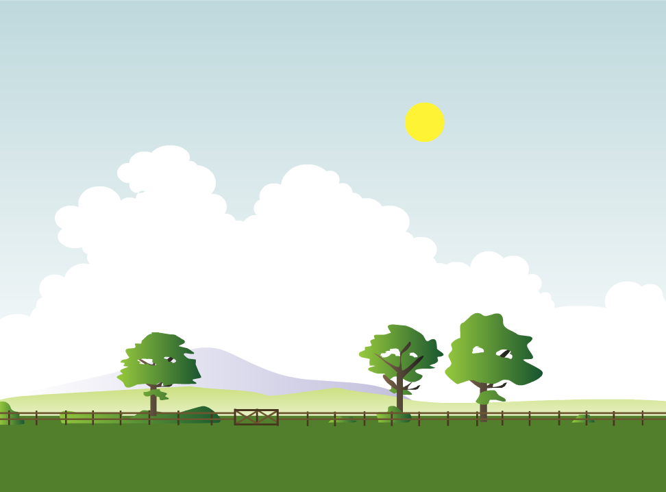
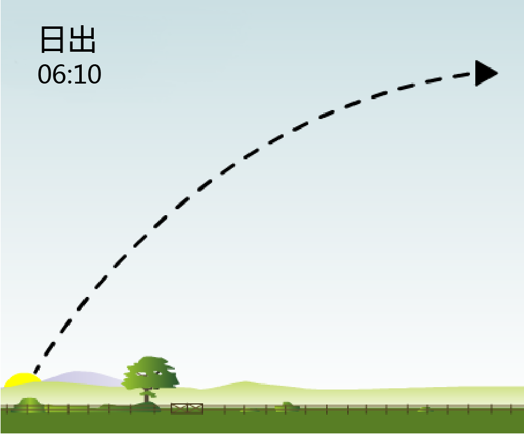
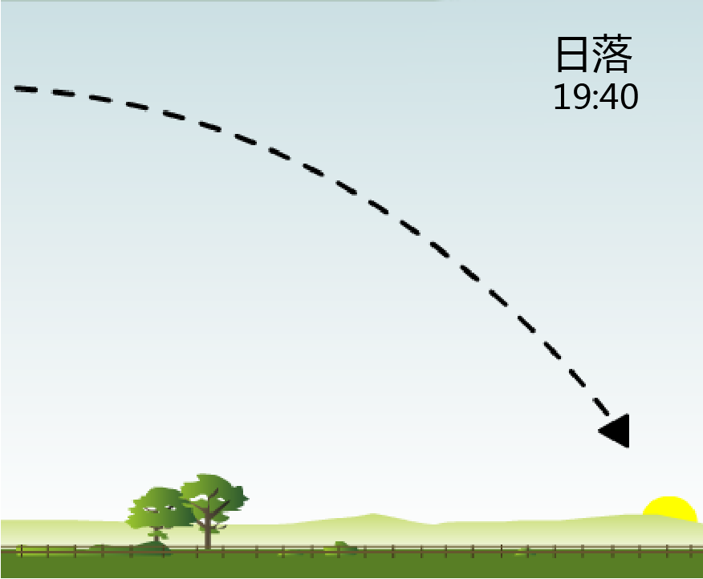
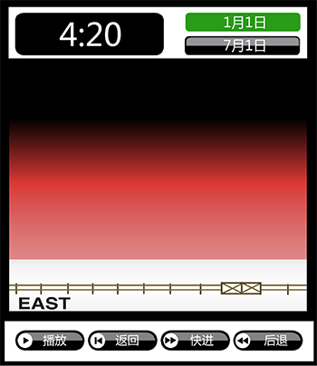
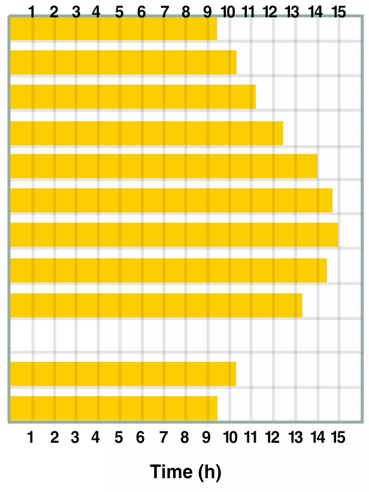
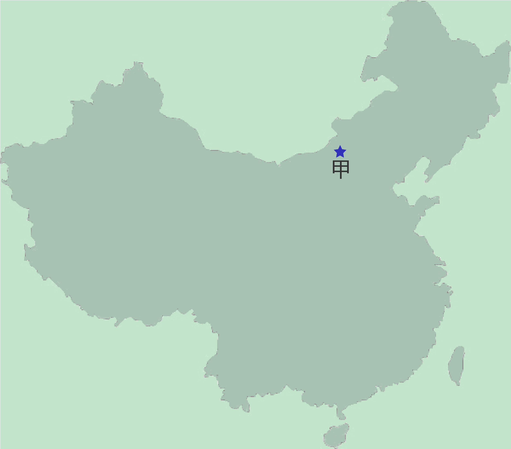
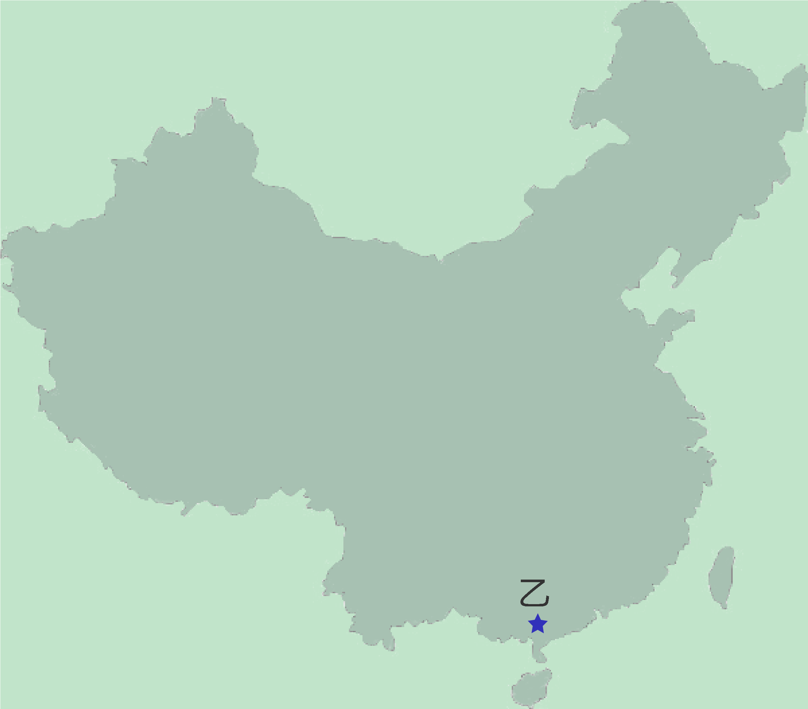

NAEQ2017
第四题 / 共二十题


上一页 下一页
第四题：西红柿种植
- 有两个农民想要种植西红柿。西红柿种植需要大量的阳光。你将看到农民甲、农民乙种植西红柿的两个地方白天日照时间的数据，请通过模拟实验确定哪个地方种植西红柿更好。
首先，你将观察太阳在天空中的路径，点击"下一页"开始你的观察。
-

-  ---------地平线
- 地平线----------- 
-
太阳在天空中弯曲的轨道上移动。
点击"播放"查看太阳一天的行进路径。
你可以点击"暂停"停止。
可以点击"返回"重新观察。
首先，你将观察太阳在天空中的路径，点击"下一页"开始你的观察。
-
日出是早晨太阳第一部分出现在地平线上的时候。
-
日落是傍晚的时候，太阳的最后一部分消失在地平线以下。
- 单击"下一页"继续
- 现在你要仔细观察1月1日和7月1日太阳在天空中的行进路径。
记录下两天日出日落的时间数据。
然后对比观察所得的数据。
单击"下一页"继续。
-

- 点击你想观察的日期（1月1日或7月1日）。
点击“播放”查看太阳的行进路径。
单击“暂停”停止。
单击“向前”或“向后”向前或向后一步一次。
单击“返回”重新开始一天。
现在试试所有的按钮。
当你准备好开始记录数据时，单击“下一页”继续。
04:20
04:20
- 首先，点击“1月1日”。
点击“播放”查看太阳的行进路径。
当太阳开始出现在地平线上时，点击“暂停”停止。
单击“向前”或“向后”向前或向后一步一次。
看看时钟，记录下1月1日日出的时间。你的答案一定要包括上午或下午。（例如：上午7:20）。
现在，点击“播放”继续。
当太阳的最后一部分消失在地平线以下时，点击“暂停”停止。
1月1日，在日落的时间记录。你的答案一定要包括上午或下午。（例如：下午19:20）。
单击“下一页”继续。
- 现在点击“7月1日”。
点击“播放”查看太阳的行进路径。
当太阳开始出现在地平线上时，点击“暂停”停止。
单击“向前”或“向后”向前或向后一步一次。
记录下7月1日日出的日落的时间。记住，你的答案一定要包括上午或下午。（例如：上午7:20）。
7月1日日出时间
7月1日日落时间
单击“下一页”继续。
- 另一个学生通过观察记录了右边的数据。
根据数据，下面哪个判断是正确的：  1月1日白昼时间更长。
1月1日白昼时间更长。
- 7月1日白昼时间更长。
- 两天的日照量一样。
- 无法区分。
- 单击"下一页"继续。单击按钮后，你将无法返回此页面。
| 日期 | 日出 日落 | |
|---|---|---|
| 1月1日 7月1日 |
上午08：38 下午17：22 上午05：22 下午20：26 |
|
- 现在比较1月1日和7月1日太阳在天空的路径。
网格线被添加到屏幕上，帮助你测量太阳在地平线上的高度。
你认为在哪一天太阳于中午十二点的高度是最低的？ - 1月1日
- 7月1日
- 有时是1月1日，有时是7月1日。
- 两天高度一样。
- 单击"下一页"继续。单击按钮后，你将无法返回此页面。
- 点击左边的按钮观察太阳在1月1日和7月1日的行进路径。用网格线帮助你测量太阳到达天空的高度。描述两个关于1月1日和7月1日太阳路径的差异。
- 不同一
- 不同二
- 去年一名学生观察记录了其居住地日照量。
记录下每个月第一天的日照时长。
右边是记录下的量表。
根据这些数据，你认为10月1日的日照时长是多少？
- 说明你是如何得出这个答案。
- 单击"下一页"继续。
日照数据量表
| 日期 | 日照量 | |
|---|---|---|
|
1月1日 2月1日 3月1日 4月1日 5月1日 6月1日 7月1日 8月1日 9月1日 10月1日 11月1日 12月1日 |
9h 15min
10h 15min 11h 15min 12h 30min 14h 0min 14h 45min 15h 0min 14h 30min 13h 15min 10h 15min 9h 30min  |
|
- 种植西红柿需要大量光照，如左图所示，两张量表分别显示日出时间、日落时间和每个季节的日照量，两个农民分别在甲乙两个地方种植西红柿，它们种植在两个地方同一类型的土壤中保持相同温度的温室里。 根据表中的数据，你认为在生长季节，种植西红柿在什么地方最合适？
- 甲地
- 乙地
- 两个地方一样
- 根据数据说明你是如何得出这个答案的

甲地西红柿生长季节
| 日期 | 日出 日落 | 日照时长 | |||||||
|---|---|---|---|---|---|---|---|---|---|
|
4月1日 5月1日 6月1日 |
上午06：45 下午19：30 上午05：50 下午20：00 上午05：15 下午20：30 |
12小时45分 14小时10分 15小时15分 |
|||||||

乙地西红柿生长季节
| 日期 | 日出 日落 | 日照时长 | |||||||
|---|---|---|---|---|---|---|---|---|---|
|
4月1日 5月1日 6月1日 |
上午06：50 下午19：20 上午06：15 下午19：45 上午06：00 下午20：00 |
12小时30分 13小时30分 14小时00分 |
|||||||